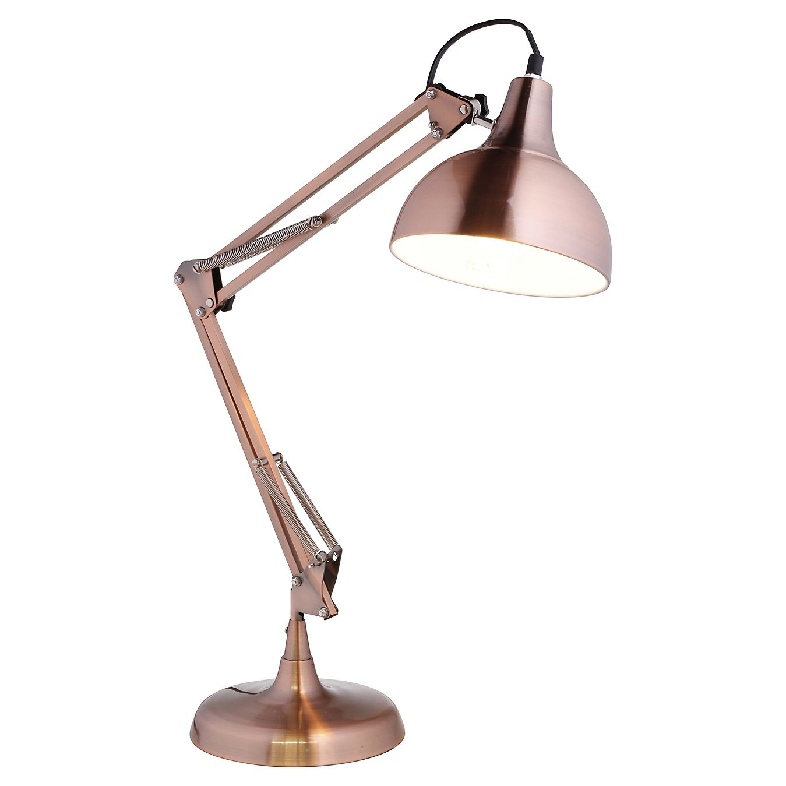
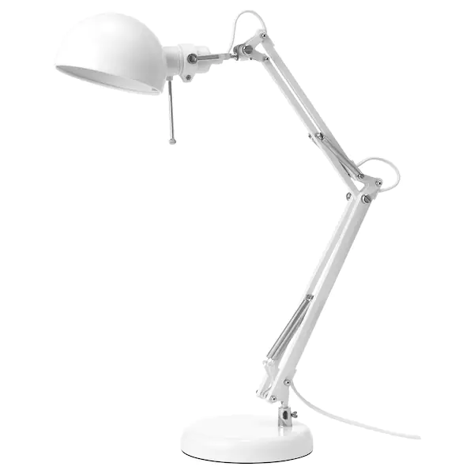

Lámparas de escritorio:
Este tipo de lámparas son ideales para estudiar o trabajar ya sea en ordenador o en libro. Pero no todas son iguales, hay muchos modelos y colores ademas de sus tecnologias ya que algunas les puedes cambiar incluso el color de la luz que emiten.
Analisi de las mejores lámparas calidad precio:
Lámpara de escritorio led táctil
Esta lámpara es de amazon y cuesta aproximadamente 25 euros, es una lámpara muy moderna ya que contiene un estilo muy peculiar y es táctil. Esta lámpara contiene 50 opciones de luz ajustables.

Lampara de escritorio FORSÅ
Esta lampara es de Ikea una tienda de muebles y cuesta 15 euros, es una lampara bastante moderna y muy senzilla de utilizar, muy recomendable. Bombilla no includia, pulsa en la imagen para ver el producto.
Esta lampara esta hecha de acero i revestimiento en polvo con lo qual la mejor forma de limpiar la lampara es con un paño humedecido de detergente i luego secar-lo con un paño seco.